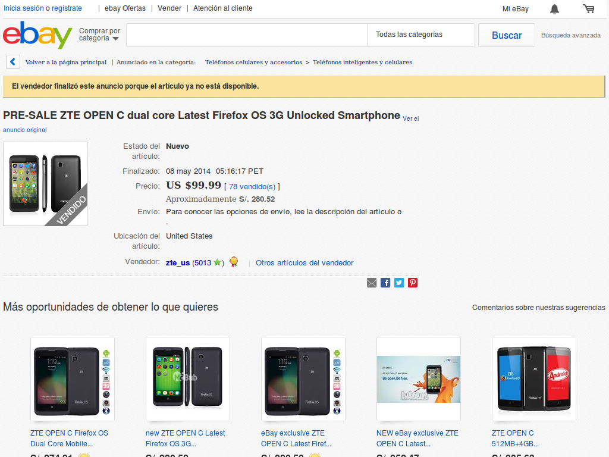
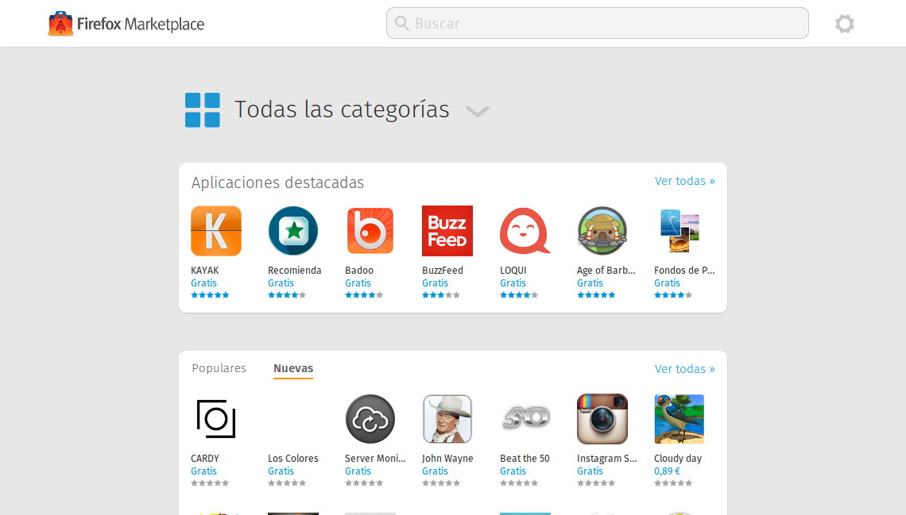
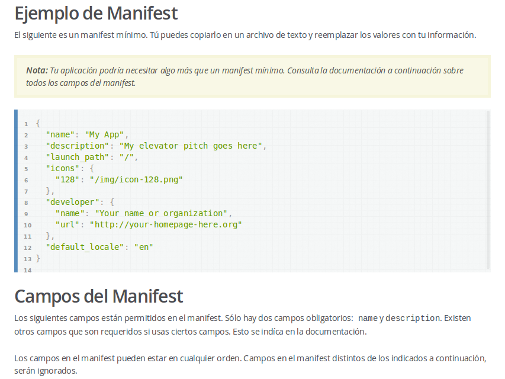

Firefox OS: El sistema operativo móvil para Latinoamérica
Firefox OS: El sistema operativo móvil para Latinoamérica

firefox.com/os
¿Qué navegadores usamos hoy?
 Laboratorio de informática en Lima, Perú
Laboratorio de informática en Lima, Perú
Mozilla hizo posible elegir
Pero fue sólo el comienzo …

webmaker.org
Photo by Jason Weaver
HTML5 para el mundo móvil
Photo by Michael Gil

Herramientas para desarrolladores en Firefox
Photo by Clive Darra
Vista de diseño adaptable
Depuración remota PC > móvil

hacks.mozilla.org
Pero es un callejón sin salida
Photo by Doug Geisler
La siguiente respuesta: Web API
arewemobileyet.com
La respuesta final: Firefox OS
Photo by Alesa Dam
Interfaz realmente flexible
Geeksphone: un teléfono para desarrolladores
geeksphone.com
www.mozilla.org/en-US/firefox/partners/
itworld.com

blogthinkbig.com
">
movistar.com.pe/firefoxos

stores.ebay.com/ztemobileus
Administrador de aplicaciones de Firefox / Firefox OS Simulator
Aplicaciones web en teléfonos

marketplace.firefox.com
Paso 1: Crea tu aplicación web con HTML5, CSS y JavaScript
developer.mozilla.org
Paso 2: Evalúa qué componentes deben ser offline.

developer.mozilla.org

developer.mozilla.org
addons.mozilla.org
marketplace.firefox.com
Firefox OS Building Blocks
 ">
">
buildingfirefoxos.com
facebook.com/mozillahispano